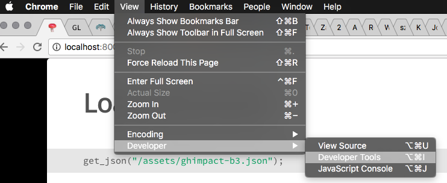

picture of chess pieces
- What is data?
- What is a database?
- Hands-on examples
- JSON and Map/Reduce
- sqlite3
- R with rsql
- Conclusion
November 3, 2016
picture of chess pieces

Plautus
Quia non suppetunt dictis data.
Because his gifts do not match his words.
— Plautus, Asinaria 56 (c. 254 BCE – 184 BCE)

Microscope
Table of Bushel Weights
Maxwell's Demon

ASCII

punch card

IBM 2311 memory unit
IBM 704 at Langley

csv
excel hex dump

key value

relational database schema

JSON

Graph: Alice and Bob are on the Chess team

Map Reduce

Load a JSON file
get_json("/assets/ghimpact-b3.json");
// wait
View the usernames
Object.keys(df);
df["mattn"]["s"];
// Array.proto.map, Array.proto.reduce
// the scores come from the data frame keys using this map function
var scores = Object.keys(df).map( function(key) { return( df[key]["s"] ) } );
var average = scores.reduce( function(sum, val) { return( sum + val ) }, initialValue=0 ) / scores.length;
Math.max.apply(Math, scores);
Mean (average), expressed as a mathematical function:
\(\mu = \frac{1}{n}\displaystyle\sum_{i=1}^{n} x_i\)
MapReduce Equivalent: